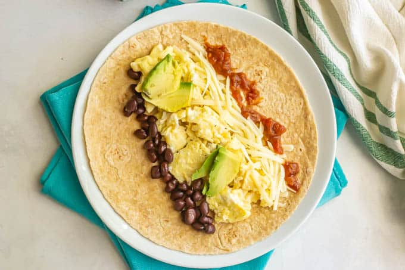

WOW a veggie breakfast burrito! This is the perfect pick-me-up to start your morning. Not incredbily heavy, yet energizing!
Start your morning off right whether you are vegetarian or not :)

Here are the Ingredients:
1 Flour Burrito Sized Tortilla
2 Eggs
1 Potato
1/2 Avocado
Cheddar cheese (to taste)
Salt and Pepper
Paprika
Onion/Garlic powder
Add an ingredient!
Here are the Instructions:
First begin by cutting up your potatoes and put them in the air fryer at 370 degrees for 10 minutes.
While thats cooking,
start scrambling your eggs seasoned with salt and pepper. Make sure not to over cook your eggs!
Take your eggs off the heat and replace with a pan to heat up your tortilla. While that happens cut up
your avocado into small cubes.
Once everything is complete layer all
ingredients (including cheese to taste) on the tortilla and roll into a burrito and VOILA a yummy breakfast burrito!!